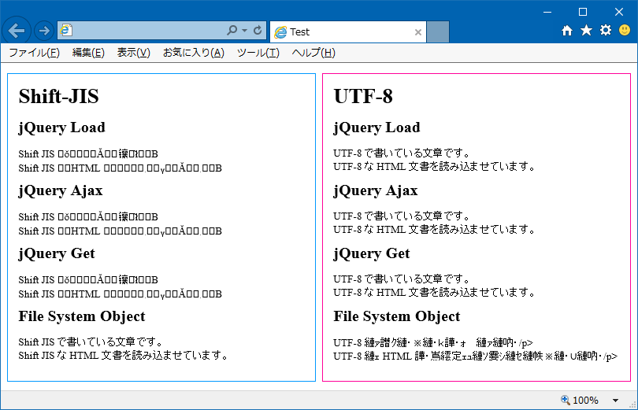
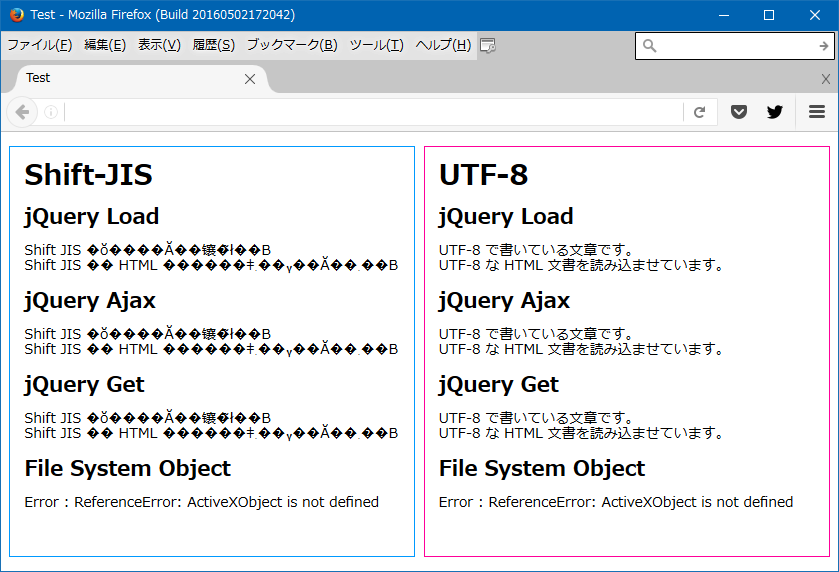
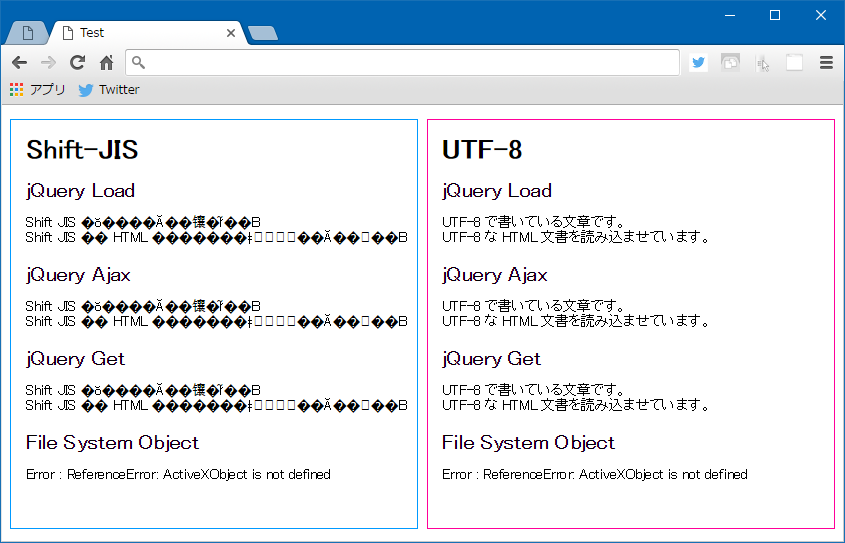
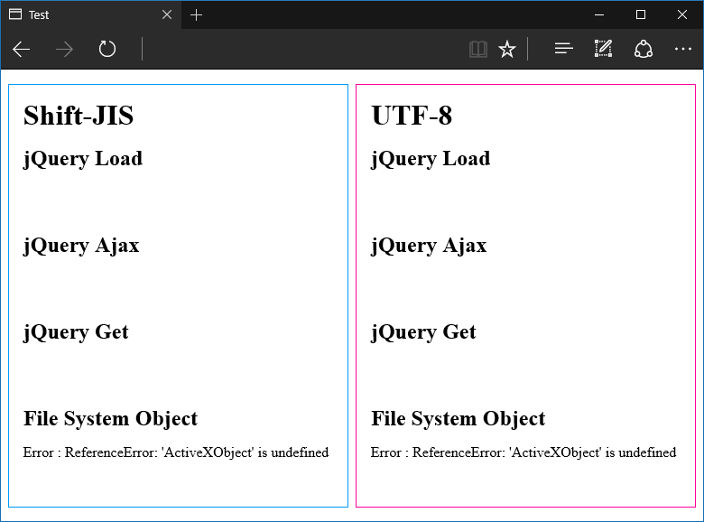

IE 限定・ローカルにある UTF-8 の HTML ファイルから Shift-JIS 形式のファイルを文字化けさせずに読み込む方法
- ローカルに HTML ファイルがある。エンコーディングは UTF-8 を指定している。
- これとは別に、同じフォルダ内に Shift-JIS 形式の別の HTML ファイルがある。
この UTF-8 の HTML ファイルから、Shift-JIS のファイルを読み込んで、インラインに展開させたい。jQuery の load() みたいなことをしたい。
しかし、jQuery の ajax() やら get() やら load() やらは、いずれも UTF-8 のファイルを読み込むのがデフォルトになっているので、Shift-JIS のファイルを読もうとすると文字化けしてしまう。
そんなワケで、ローカルの HTML ファイルから他の HTML ファイルを読み込む jQuery のメソッドを試してみつつ、読み込む対象のファイルのエンコード指定と文字化けの関係を調べてみた。
- 調査したブラウザ：
- IE11
- Firefox
- Chrome
- Edge (※ 2020-12-23 追記 : 当時の Legacy Edge のことです)
- 呼び元の HTML ファイル：
- ローカルにある UTF-8 のファイル
- 読み込む HTML ファイル：
- ローカルにある Shift-JIS のファイル (基本は文字化けするが、文字化けさせずに読み込みたいファイル)
- ローカルにある UTF-8 のファイル (呼び元との組み合わせ的にも、基本的に文字化けしないファイル)
- 読み込み方：
- jQuery.load()
- jQuery.ajax()
- jQuery.get()
- Scripting.FileSystemObject
長くなりそうなので先に結論を
呼び元が UTF-8 の HTML ファイルで、Shift-JIS の別ファイルを読み込みたい時は、Scripting.FileSystemObject を使って Shift-JIS のファイルを読み込み、ReadAll() などで拾った値を jQuery.html() の引数にでも与えてやれば、両ファイル間で文字コードが違っても文字化けせずに読み込める。
FileSystemObject が使えるのは ActiveXObject が使える IE11 だけで、かつローカルでしか使えないと思うので、「IE11 限定」「ローカルにある HTML ファイル限定」というワケ。
では、以下、順に試してみる。
呼び元の HTML ファイル
まずはテストするための、呼び元の HTML ファイルを作った。以下のような感じで、Shift-JIS の HTML と、UTF-8 の HTML とを、それぞれ4つの読み込み方で読み込もうとしている。
<!DOCTYPE html>
<html lang="ja">
<head>
<meta charset="UTF-8">
<meta http-equiv="X-UA-Compatible" content="IE=edge">
<meta name="viewport" content="width=device-width, initial-scale=1">
<title>Load Local File</title>
<style>
/* 適当にスタイル付けしとく～ */
* {
margin:0;
box-sizing:border-box;
line-height:1.1;
}
body {
width:100%;
margin-top:1rem;
}
body > div {
width:48.5%;
padding:1rem;
}
section {
height:5rem;
}
#sjis {
float:left;
margin-left:1%;
border:1px solid #09f;
}
#utf8 {
float:right;
margin-right:1%;
border:1px solid #f09;
}
h2, section {
margin:1rem 0;
}
</style>
<!-- jQuery は適当に v1 系を読んでおく -->
<script src="https://code.jquery.com/jquery-1.12.4.js"></script>
<script>
// ・ShiftJIS.html
// ・UTF-8.html
// 2つの HTML ファイルをこの HTML と同階層に置いておく
// Firefox の「整形式になっていません。」エラー
// → $.ajax() と $.get() で、dataType に "html" を明記しないと発生する (IE・Chrome は dataType を省略しても動作する)
// Chrome の「Cross origin requests are only supported for protocol schemes: http, data, chrome, chrome-extension, https, chrome-extension-resource.」
// → Chrome を起動するときに「--allow-file-access-from-files」オプションを与えて起動すると動くようになる
$(function() {
$("#sjis-load").append($("<div>").load("ShiftJIS.html", function(data) {
console.log("Shift-JIS Load : " + data);
}));
$.ajax({
type: "GET",
url: "ShiftJIS.html",
dataType: "html",
success: function(data) {
console.log("Shift-JIS Ajax : " + data);
$("#sjis-ajax").append($("<div>").html(data));
},
error: function() {
console.log("Shift-JIS Ajax : Error");
}
});
$.get("ShiftJIS.html", function(data) {
console.log("Shift-JIS Get : " + data);
$("#sjis-get").append($("<div>").html(data));
}, "html");
$("#sjis-fso").append($("<div>").html(loadFso("Shift-JIS", "ShiftJIS.html")));
$("#utf8-load").append($("<div>").load("UTF-8.html", function(data) {
console.log("UTF-8 Load : " + data);
}));
$.ajax({
type: "GET",
url: "UTF-8.html",
dataType: "html",
success: function(data) {
console.log("UTF-8 Ajax : " + data);
$("#utf8-ajax").append($("<div>").html(data));
},
error: function() {
console.log("UTF-8 Ajax : Error");
}
});
$.get("UTF-8.html", function(data) {
console.log("UTF-8 Get : " + data);
$("#utf8-get").append($("<div>").html(data));
}, "html");
$("#utf8-fso").append($("<div>").html(loadFso("UTF-8", "UTF-8.html")));
});
function loadFso(mode, fileName) {
try {
var fso = new ActiveXObject("Scripting.FileSystemObject");
// FileSystemObject の起点はデスクトップになるようなので、基本的に絶対パスでないと読み込めない
// (起点は fso.GetFolder("."); で確認)
var file = fso.OpenTextFile("C:/Test/" + fileName);
var text = file.ReadAll();
console.log(mode + " FSO [" + fileName + "] " + text);
return text;
}
catch(e) {
console.log(mode + " FSO [" + fileName + "] : Error " + e);
return "Error : " + e;
}
}
</script>
</head>
<body>
<div id="sjis">
<h1>Shift-JIS</h1>
<section id="sjis-load">
<h2>jQuery Load</h2>
</section>
<section id="sjis-ajax">
<h2>jQuery Ajax</h2>
</section>
<section id="sjis-get">
<h2>jQuery Get</h2>
</section>
<section id="sjis-fso">
<h2>File System Object</h2>
</section>
</div>
<div id="utf8">
<h1>UTF-8</h1>
<section id="utf8-load">
<h2>jQuery Load</h2>
</section>
<section id="utf8-ajax">
<h2>jQuery Ajax</h2>
</section>
<section id="utf8-get">
<h2>jQuery Get</h2>
</section>
<section id="utf8-fso">
<h2>File System Object</h2>
</section>
</div>
</body>
</html>
この HTML ページ自体は <meta charset="UTF-8"> と書いているとおり、UTF-8 でエンコーディングする前提。そのため、Shift-JIS でエンコーディングされている ShiftJIS.html を jQuery で読み込むと文字化けする。
しかし、FileSystemObject で ShiftJIS.html を読み込み、その内容を
$("#sjis-fso").append($("<div>").html(loadFso("Shift-JIS", "ShiftJIS.html")));
このようにして HTML 内に展開すると、文字化けせずに表示させられる。
ブラウザごとに色々引っかかったポイントがあった。
- 当然だが、Scripting.FileSystemObject は ActiveXObject が使える IE11 でのみ使える。Firefox や Chrome は勿論だが、Edge も ActiveXObject に対応していない。
- Firefox は jQuery の
ajax()とget()の引数で dataType を指定しないとエラーが出て読み込めない。 - Chrome でローカルの HTML ファイルから
ajax()などを動作させるには、--allow-file-access-from-filesという引数を与えて Chrome を起動させる必要がある。- Windows なら「ファイル名を指定して実行」で以下のように起動する。
chrome –allow-file-access-from-files- 参考：jQuery.load()をChromeで使う時にちょっとハマったこと | バシャログ。
結果の画面キャプチャ
順に表示結果を見てみる。
IE11

画面左下の「Shift-JIS」：「FileSystemObject」部分。UTF-8 の HTML ファイルであるにも関わらず、Shift-JIS の HTML ファイルを読み込んで文字化けせずに展開できている。それ以外の jQuery を使った方法では文字化けしてしまっている。
また、UTF-8 のファイルを FileSystemObject で読み込んでも文字化けしてしまうことから、有効なのは「UTF-8 の HTML ファイルで Shift-JIS の HTML ファイルを読み込む場合」のみ。また、FileSystemObject の性質上、サーバを介して使用することはないだろうから、ローカルの HTML ファイルでのみ使える技、ということになる。
Firefox

以降は同じソースを他のブラウザで見てみただけ。
Firefox でも Shift-JIS の HTML ファイルは文字化けしているほか、ActiveXObject が使えないので FileSystemObject も当然使えない。
Firefox は別の方法でローカルの HTML ファイルを読み書きできるみたいだけど、Components がもう使えない？らしく、うまくいかなかった。
- 参考：JavaScriptからローカルファイルを作成する方法まとめ - あらびき日記
- 参考：Firefoxのjavascriptでローカルファイルにアクセスする方法まとめ - 開発者
- 参考：javascript - How to reset netscape.security.PrivilegeManager.enablePrivilege? - Stack Overflow
Chrome

Chrome も Firefox と同様の表示。
Chrome でローカルファイルを操作するには File API が使えるらしい。試してない。
Edge

Windows10 にしたことだし、Edge でも見てみた。Edge は ActiveXObject がサポートされていない他、セキュリティ設定の問題か、ローカルで Ajax ができないみたい。
以上
未だに IE しか使わせてもらえないレガシープログラマにとって、JScript・FileSystemObject はまだまだ現役。……泣ける話や……。
それにしても、FileSystemObject で読み込むと文字化けしないのはなんで？